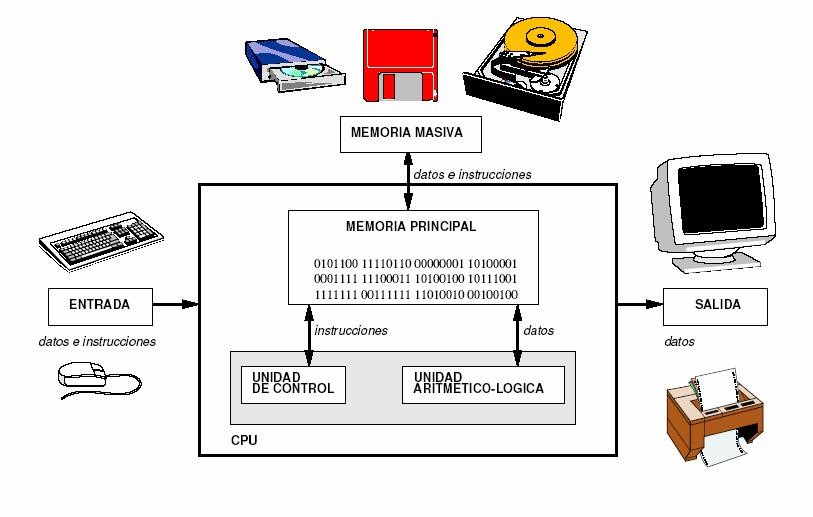
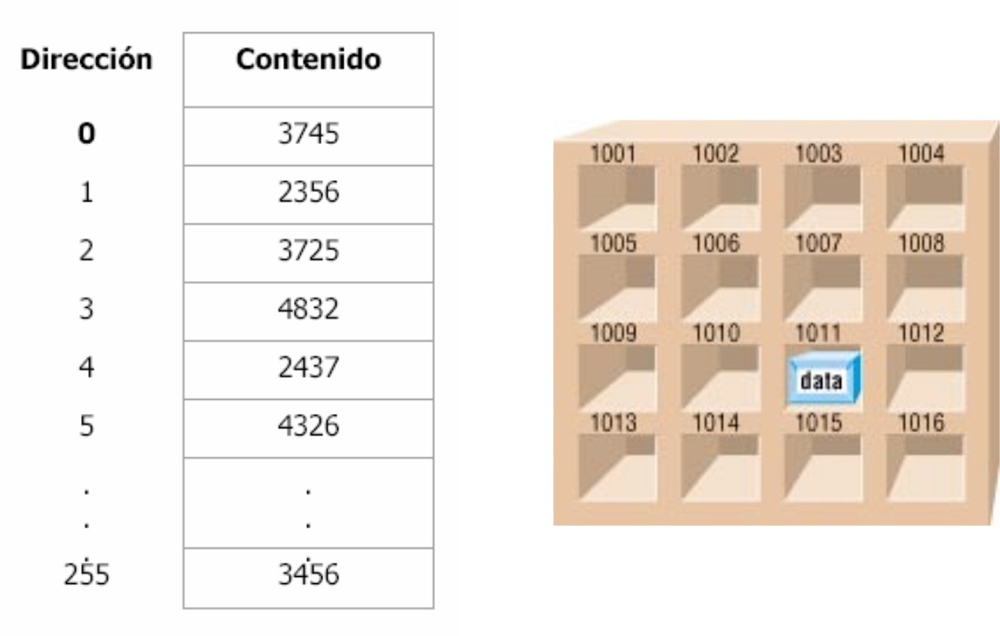
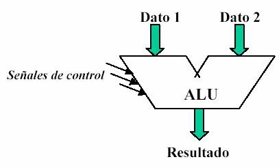
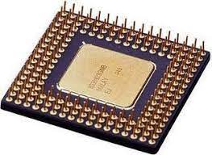
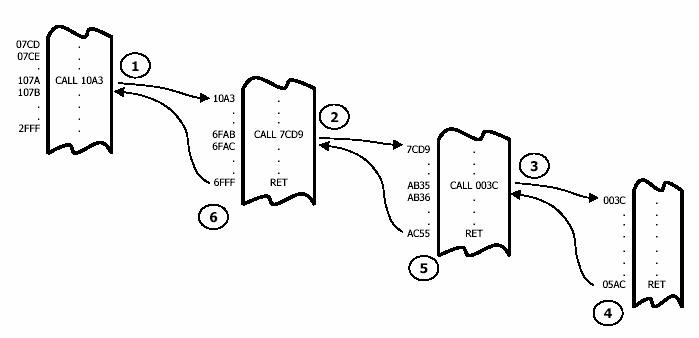

IDEA CLAVE: El programa se almacena en memoria junto con los datos.
Unidades de entrada
Dispositivos por medio de los cuales se introducen datos e instrucciones en el ordenador.
vg: Teclado, ratón, cámara digital, escáner, lector de códigos de barras...
Unidades de salida
Dispositivos por donde se obtienen los resultados de los programas ejecutados por el ordenador.
vg: Monitor, impresora, plotter, sintetizador de voz...
Memoria
Donde se almacenan, por un corto o largo período de tiempo, tanto los datos como las instrucciones.
Memoria principal/central/interna
La que trabaja a mayor velocidad
· RAM [Random Access Memory]: De lectura y escritura, suele ser volátil.
· ROM [Read Only Memory]: Sólo lectura (no se puede modificar), permanente.
- Para que un programa se ejecute, debe estar cargado (almacenado) en la memoria principal.
- Se estructura en posiciones de un determinado número de bits(palabras de memoria) a las que se accede por su direccion.

Memoria auxiliar/secundaria/externa/masiva
Más lenta, pero de mayor capacidad que la memoria principal
Los datos y programas se suelen almacenar en la memoria auxiliar para que, cuando se ejecute varias veces un programa o se utilicen repetidamente unos datos, no sea necesario introducirlos de nuevo.
vg: Dispositivos de almacenamientocomo discos magnéticos y ópticos, cintas magnéticas...
CPU [Central Processing Unit]
CPU = ALU + UC
Unidad aritmético-lógica (UAL o ALU)
Unidad encargada de efectuar las operaciones aritméticas y lógicas.

Unidad de control (UC)
Detecta señales de estado procedentes de las distintas partes del ordenador y genera señales de control dirigidas a todas las unidades para controlar el funcionamiento de la máquina.
Capta de la memoria principal las instrucciones del programa que ejecuta el ordenador, las descodifica y las ejecuta una a una.
Contiene un reloj que sincroniza todas las operaciones elementales involucradas en la ejecución de una instrucción.
La frecuencia del reloj (en Megahertzios, MHz, o Gigahertzios, GHz) determina, en parte, la velocidad de funcionamiento del ordenador.
Microprocesador
CPU contenida en uno o varios circuitos integrados (chips)

Ejecución de un programa
Una vez cargado el programa en memoria, se le cede el control del ordenador:1. Se lee una instrucción del programa.
2. La unidad de control decodifica la instrucción
3. La unidad de control envía las señales necesarias para ejecutar la instrucción:
a. Se leen los datos de entrada (1 ó 2)
b. Se efectúa una operación con ellos en la ALU (p.ej. suma)
c. Se almacena el resultado
4. Se determina cuál debe ser la siguiente instrucción que se debe ejecutar.
5. Se vuelve al paso 1.
Tipos de instrucciones
Instrucciones de transferencia de datos
Mover datos de un sitio a otro
Instrucciones de tratamiento
Realización de operaciones aritméticas y lógicas
Instrucciones de bifurcación y saltos
Alteración del orden secuencial de ejecución de las instrucciones
Por ejemplo Llamadas/retornos de subrutinas

Otras
Por ejemplo Petición de interrupciones, detención de la CPU etc.